<!DOCTYPE html>
<!--[if IE 7 ]><html class="ie ie7 lte9 lte8 lte7" lang="en-US"><![endif]-->
<!--[if IE 8]><html class="ie ie8 lte9 lte8" lang="en-US">	<![endif]-->
<!--[if IE 9]><html class="ie ie9 lte9" lang="en-US"><![endif]-->
<!--[if (gt IE 9)|!(IE)]><!-->
<html class="noIE" lang="en-US">
<!--<![endif]-->
	<head>
		<title>Impares - Memoria</title>

		<!-- meta -->
		<meta http-equiv="X-UA-Compatible" content="IE=edge">
		<meta http-equiv="Content-Type" content="text/html; charset=UTF-8"/>
		<meta name="viewport" content="width=device-width, initial-scale = 1.0, maximum-scale=1.0, user-scalable=no"/>
		
		<!-- google fonts -->
		<link href='https://fonts.googleapis.com/css?family=PT+Serif:400,400italic,700italic,700' rel='stylesheet' type='text/css'>
  		<link href='https://fonts.googleapis.com/css?family=Open+Sans:400,300,300italic,400italic,600,600italic,700,700italic,800,800italic' rel='stylesheet' type='text/css'>  
		
		<!-- css -->
		<link rel="stylesheet" href="assets/css/bootstrap.min.css">
		<link rel="stylesheet" href="assets/css/font-awesome.min.css">
		<link rel="stylesheet" href="assets/css/style.css" media="screen"/>

		<!-- HTML5 shim and Respond.js IE8 support of HTML5 elements and media queries -->
		<!--[if lt IE 9]>
			<script src="assets/js/html5shiv.js"></script>
			<script src="assets/js/respond.js"></script>
		<![endif]-->

		<!--[if IE 8]>
	    	<script src="assets/js/selectivizr.js"></script>
	    <![endif]-->
	</head>
	
	<body>
		<div id="drawer-right">
			<div class="cross text-right">
				<a class="toggleDrawer" href="#"><i class="fa fa-times-circle fa-2x"></i></a>
			</div>
			
			<nav>
				<ul class="nav nav-pills nav-stacked">
					<li>
						<a href="#wrapper"> Inicio</a>
					</li>
					<li>
						<a href="#services"> 1. Introducción</a>
					</li>
					<li>
						<a href="#services_why"> 2. ¿Por qué este proyecto?</a>
					</li>
					<li>
						<a href="#services_idea">3. Evolución de la idea</a>
					</li>
					<li>
						<a href="#services_value">4. Valores</a>
					</li>
					<li>
						<a href="#impares">5. Naming</a>
					</li>
					<li>
						<a href="#services_image">6. La marca</a>
					</li>
					<li>
						<a href="#impares_ref">7. Referentes</a>
					</li>
					<li>
						<a href="#services_pal">8. Paletas cromáticas</a>
					</li>
					<li>
						<a href="#impares_tip">9. Tipografías</a>
					</li>
						<li>
						<a href="#services_cards">10. Cards</a>
					</li>
						<li>
						<a href="#impares_dis">11. Diseño</a>
					</li>
					<li>
						<a href="#services_test">12. Test de usuarios</a>
					</li>
					<li>
						<a href="#impares_des">13. Desarrollo y aspectos técnicos</a>
					</li>
					<li>
						<a href="#services_web">14. Webgrafía y Bibliografía</a>
					</li>
					<li>
						<a href="#parallax">Descargar memoria</a>
					</li>
					<li>
						<a href="#testimonials">Nosotros</a>
					</li>
				</ul>
			</nav>
			
		</div><!-- #drawer-right -->

		<div id="wrapper">
			
			<div id="header" class="content-block">
				<section class="top clearfix">
					<div class="pull-left">
						<a href="index.html"></a>            
						
					</div>
					<div class="pull-right">
						<a class="toggleDrawer" href="#"><i class="fa fa-bars fa-2x"></i></a>
					</div>
				</section>
				<section class="center">
					<div class="slogan">
						Memoria del proyecto 
					</div>
					<div class="secondary-slogan">
						Jordi Cutillas, Mariona Mercadal y Natalia Camacho
					</div>
				</section>
				<section class="bottom">
					<a id="scrollToContent" href="#services">
						
					</a>
				</section>
			</div><!-- header -->

			

			<div class="content-block parallax" id="services">
				<div class="container text-center">
					<header class="block-heading cleafix">
						
						<h1>1. Introducción</h1>
						
					</header>
					<section class="block-body">
						<div class="colum_up">A lo largo de las páginas de este documento vamos a poder ver el inicio, la evolución y la conclusión del proyecto que hemos nombrado como “Impares”, teniendo en mente y explicando desde su conceptualización, creación del contenido, diseño, desarrollo técnico, experimentación y testeos por parte de posibles usuarios.

No podemos decir que este proyecto estuviera definido y nombrado desde sus inicios, sino que su nacimiento fue más bien caótico, producción de una lluvia de ideas de 15 mentes pensantes. En su primer alumbramiento fue nombrado como Web para dejar relaciones de todo tipo o en su abreviación “Rupturas”.

Mediante entrevistas con usuarios de la calle, investigaciones sobre rupturas de todo tipo, trabajando historias de usuario, posibles funcionalidades de la web, etc. todos los compañeros que fueron pasando por el proyecto fueron sacando insights, mejorando y transformando esa idea inicial, convirtiéndola desde una web para hacer regalos desagradables a tu (ex)pareja hasta una web que organizaba eventos para darle un ultimatum a tu compañero de piso, jefe, etc. </div>

<div class="colum_down">Haciendo una retrospectiva del presente de la idea a su pasado, podemos decir que se ha iterado mucho en el concepto, en lo que queríamos transmitir, y ofrecer a la gente. Y creemos que hemos conseguido de un ovillo de nudos y enredos, ir deshilando poco a poco, con trabajo, esfuerzo y cabeza, e ir concretando la idea, definir aquellos planteamientos que veíamos válidos y coherentes en frente de aquellos que no nos aportaba lo suficiente al proyecto.

En definitiva, queremos que durante los siguientes apartados y a través de nuestras palabras se sumerjan en el proyecto que durante estos meses hemos acogido con mucho cariño y pasión, y que podáis ver lo que para nosotros es nuestro mundo de “Impares”.</div>

					</section>

				</div>
			</div><!-- #services -->
				<div class="content-block parallax" id="services_why">
				<div class="container text-center">
					<header class="block-heading cleafix">
						<h1>2. ¿Por qué este proyecto?</h1>
						
					</header>
					<section class="block-body">
						<div class="colum_up">Y llegó el momento, por qué debíamos elegir este proyecto, y no cualquiera de los otros tres que estaban encima de la mesa.

Recordando aquel dia, los actuales miembros del proyecto, nos juntamos un poco por azar, un poco por nuestros perfiles profesionales con los cuales sabíamos que podríamos encajar bien. Una vez formado el equipo, se nos venía encima la primera decisión grupal, elegir la idea que queríamos desarrollar durante los siguientes meses.

Al principio te asustas un poco, pensando que va a ser una de las decisiones más importantes a tomar, que podría marcar el triunfo o el fracaso, pero que con el tiempo nos hemos dado cuenta que con esfuerzo y trabajo todo proyecto es válido. Así pues, después de un momento de dudas y temblores los tres tuvimos claro que lo que nos hacía sentir mariposas en el estómago era el proyecto de “Rupturas”.
Apostamos por él, porque los tres habíamos visto la potencialidad de este proyecto. Realmente era algo original, que tenía una chispa de gracia pero a la vez era una tema 
 </div>

<div class="colum_down"> serio; que todavía no existía un mercado en Internet, o una web en este caso, que se dedicara de una manera seria y rigurosa a hablar de la ruptura de una relación y que realmente pensamos que iba a ser un proyecto que íbamos a disfrutar, y nos sentiríamos cómodos desarrollando.

Así, llenos de dudas por lo que nos esperaba, pero con ganas de sacar el proyecto adelante, nos encontramos con la idea que había quedado de la última iteración en grupos que se había hecho que se resumiría en una web para romper relaciones de todo tipo, pero se había focalizado sobre todo en el camino de las relaciones amorosas, concretamente en las infidelidades.

Con todo esto entre nuestras manos, iniciamos la que sería nuestra propuesta para la que necesitamos una limpieza de ideas, centrarnos en un concepto y sobretodo focalizar que queríamos ofrecer a nuestro usuario o cliente.

.</div>

					</section>

					
				</div>
			</div>
			<div class="content-block parallax" id="services_idea">
				<div class="container text-center">
					<header class="block-heading cleafix">
						<h1 class="idea_text">3. Evolución de la idea</h1>
						
					</header>
					<section class="block-body">
						<div class="colum_up">Nuestra idea al inicio era un poco dispersa, queríamos ayudar a las personas en el momento de romper con su pareja, pero a la vez era importante para nosotros introducir el tema de la infidelidad, desde el punto de vista de poner a prueba a tu pareja y saber si es fiel o infiel.

Fue entonces, cuando decidimos que nuestra web se centraría en ofrecer una serie de servicios, que ayudarán al usuario a lo largo del proceso de duda y ruptura de una relación amorosa. El resultado de más testeos con usuarios, de las críticas positivas y negativas recibidas y de muchas horas de debate y trabajo, fue que queríamos crear una plataforma que de una manera desenfadada, con un toque de humor pero con la empatía por bandera, ayudar al usuario a resolver sus duda respecto a su pareja y la relación.
 </div>

<div class="colum_down">Enfocada a un público joven y de mediana edad de entre unos 16 años, cuando empiezan a tener sus primeras relaciones, hasta una edad de 40-45 años, personas que dominan un poco el mundo digital y que se encuentran en una edad crítica en la cual se dan la mayoría de divorcios.

Los servicios también fueron remodelados, decidimos mantener como pilar principal “Prueba de fidelidad”. También mantuvimos “Dejar” y descartamos “Ultimátum” por la gran logística que podía necesitar y porque realmente el beneficio que podíamos sacarle no era mayor que el tiempo que se invertía. “Antiregalos” quedó en el borde del abismo durante unas semanas hasta que finalmente decidimos eliminarlo por posibles problemas legales, y decidimos añadir un servicio llamado “Paquete negro” y otro llamado “Red de Impares”.
</div>


					</section>

				</div>
			</div><!-- #services -->
			<div class="content-block parallax" id="services_value">
				<div class="container text-center">
					<header class="block-heading cleafix">
						<h1>4. Valores</h1>
						<section class="block-body">
						<div class="row">
							<div class="col-md-4">
								<div class="service">
									
									<h2>Confianza</h2>
									<p>En todo momento, nuestra web debe transmitir sensación de seguridad e intimidad ,el usuario debe entender que sus datos personales jamás se harán públicos y que nuestro servicio es serio. Ya que así afianzamos la decisión del usuario a la hora de elegir un servicio de nuestra web.</p>
								</div>
							</div>
							<div class="col-md-4">
								<div class="service">
									
									<h2>Empatía</h2>
									<p>La empatía es la capacidad para ponerse en el lugar del otro y saber lo que siente o incluso lo que puede estar pensando. Nuestro deber es responder de una manera apropiada a la emoción que la otra persona está sintiendo y guiarle por el proceso de la mejor manera posible.
</p>
								</div>
							</div>
							<div class="col-md-4">
								<div class="service">
									
									<h2>Pasional</h2>
									<p>Nuestra web gira en torno a las relaciones amorosas. Por eso debe quedar claro desde el principio que nuestra web es pasional, nuestros usuarios actuarán movidos por sus sentimientos y emociones.</p>
								</div>
							</div>
						</div>
					</section>
						

				</div>
			</div><!-- #services -->

			

<div class="content-block parallax" id="impares">
				<div class="container text-center">
					<header class="block-heading cleafix">
						<h1>5. Naming</h1>
						
					</header>
					<section class="block-body">
						<div class="colum_up_impares">Impar define aquello que no es divisible por dos. Por lo tanto con el nombre de IMPARES, hemos hecho referencia en plural a las parejas  que de repente se ven sumidas en problemas de 3 (número impar) por una infidelidad, o bien quieren dejarlo y quedarse solos, 1 persona (numero también impar). Además la palabra “impares” incluye el sustantivo pares, que nos define al igual que la palabra impar involucra a su vez el ser par, hecho que va ligado a nuestro servicio de “red de impares” objetivo del cual es juntar a esa gente que lo acaban de dejar con sus parejas.</div>

						


					</section>

				</div>
			</div><!-- #services -->
			<div class="content-block parallax" id="services_image">
				<div class="container text-center">
					<header class="block-heading cleafix">
						<h1>6. La marca</h1>
						<div class="colum_up_logoimpares">Nuestro logo representa a primera vista un corazón compuesto por 3 puntos, que juegan con nuestro nombre de “impares”. Detallando un poco más, vemos que el corazón está realizado sobre 3 engranajes que mueven unas cuerdas entre sí, queriendo hacer una apología de lo que implica el amor, un trabajo diario y constante de construir con tu pareja una relación de confianza. Pero si nos fijamos, una de estas cuerdas de unión está rota (haciendo referencia las rupturas) y hace que el resto del mecanismo con una de las redondas (representando personas) no funcione. Esto implica el momento de la infidelidad, o el momento en que conoces otra persona y quieres dejarlo con tu pareja. Ahí todo el mecanismo queda roto y por lo tanto disfuncional.</div>

						
					
					
					</section>
				</div>
			</div><!-- #services -->
			<div class="content-block parallax" id="impares_ref">
				<div class="container text-center">
					<header class="block-heading cleafix">
						<h1>7. Referentes</h1>
						
					</header>
					<section class="block-body">
						<div class="colum_up_referencies">Para inspirarnos hemos buscado muchas referencias de web en internet. Al principio sin mucha idea de lo que buscábamos o qué estilo queríamos, hasta que fuimos encontrando webs que nos encajaban con nuestro concepto e idea. Enseñamos algunas imágenes que cogimos como referencia para nuestro diseño.</div>

						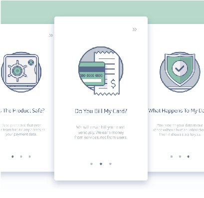
						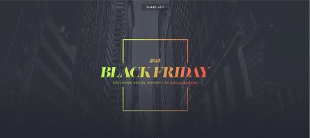
						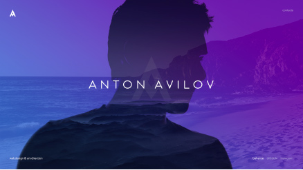
						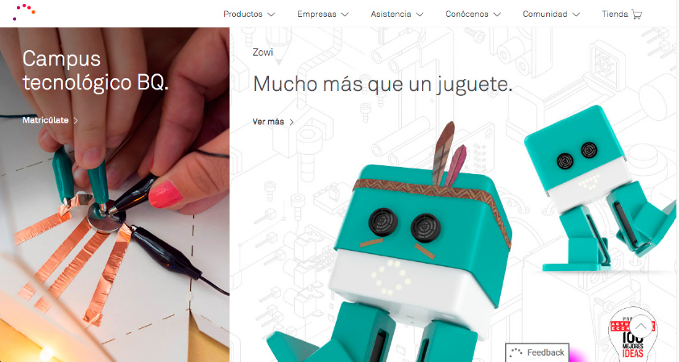
						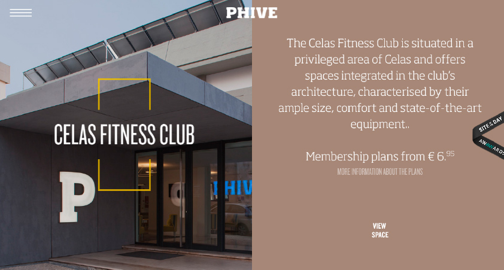


					</section>

				</div>
			</div><!-- #services -->
			<div class="content-block parallax" id="services_pal">
				<div class="container text-center">
					<header class="block-heading cleafix">
						<h1>8. Paletas cromáticas</h1>
						<div class="colum_up_referencies">Para realizar la web, pensamos en varios colores acordes con la temática elegida. 
Realizamos varias paletas cromáticas para al final decantarnos por una opción diferente. El proceso de selección empezó siendo unos colores muy neutros, rojos, grises, negros...etc. Empezamos a pensar en aportar color cuando vimos que la web se quedaba demasiado insulsa. Es por ello que decidimos aplicar colores para cada servicio, consiguiendo así abrir un poco más el rango de cromatismos y añadir un poco más de alegría a un tema que de por sí es algo dificil de abordar. 

</div>
<p class="btn-text">Colores prueba de fidelidad definitivos</p>
<a class="btn-colors" style="background-color: #2c0c52;">#2c0c52</a>
<a class="btn-colors" style="background-color: #6a38b2;">#6a38b2</a>
<a class="btn-colors" style="background-color: #9079b2;">#9079b2</a>
<a class="btn-colors" style="background-color: #afa6bc;">#afa6bc</a>
<a class="btn-colors" style="background-color: #c7c2ce;">#c7c2ce</a>
<a class="btn-colors" style="background-color: #d8d5db;">#d8d5db</a>
<a class="btn-colors" style="background-color: #565656;">#565656</a>
<a class="btn-colors" style="background-color: #262626;">#262626</a>

<p class="btn-text">Colores dejar definitivos</p>
<a class="btn-colors" style="background-color: #590b21;">#590b21</a>
<a class="btn-colors" style="background-color: #811e32;">#811e32</a>
<a class="btn-colors" style="background-color: #b9899b;">#b9899b</a>
<a class="btn-colors" style="background-color: #b9899b;">#b9899b</a>
<a class="btn-colors" style="background-color: #cda2b1;">#cda2b1</a>
<a class="btn-colors" style="background-color: #dfbcc6;">#dfbcc6</a>
<a class="btn-colors" style="background-color: #d8d5db;">#d8d5db</a>
<a class="btn-colors" style="background-color: #565656;">#565656</a>
<a class="btn-colors" style="background-color: #262626;">#262626</a>

<p class="btn-text">Colores de otras páginas definitivos</p>
<a class="btn-colors" style="background-color: #3a627e;">#3a627e</a>
<a class="btn-colors" style="background-color: #e0e0e0;">#e0e0e0</a>
<a class="btn-colors" style="background-color: #d2d2d2;">#d2d2d2</a>
<a class="btn-colors" style="background-color: #b9b9b9;">#b9b9b9</a>


					
					
					</section>
				</div>
			</div><!-- #services -->
			<div class="content-block parallax" id="impares_tip">
				<div class="container text-center">
					<header class="block-heading cleafix">
						<h1>9. Tipografías</h1>
						
					</header>
					<section class="block-body">
						<div class="colum_up_referencies">Las tipografías que forman parte de nuestro proyecto web.</div>
						<h3>Pt Serif</h2>
						<p class="ptserif">ABCDEFGHIJKLMNÑOPQRSTUVWXYZ .,*^?()=</p>
						<h3>Open Sans</h2>
						<p class="opensans">ABCDEFGHIJKLMNÑOPQRSTUVWXYZ .,*^?()=</p>


					</section>

				</div>
			</div><!-- #services -->
			<div class="content-block parallax" id="services_cards">
				<div class="container text-center">
					<header class="block-heading cleafix">
						<h1>10. Cards</h1>
						<div class="colum_up_referencies">Cuando empezamos a pensar en los elementos que tendrían los servicios, inmediatamente creímos necesario el formato de la card. En un principio empezamos a diseñar la card con un fondo neutro, la imagen en blanco y negro y solo destacando la caja en color. Consideramos que quedaba demasiado llamativo así que redujimos la paleta cromática y optamos por una versión más minimalista, con un fondo blanco y la imagen a color, una forma de seleccionar bastante sencilla y que el precio estuviera muy visible a simple vista.

</div>

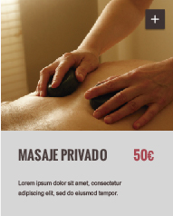
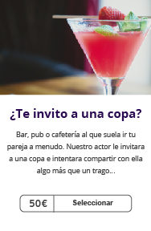

					
					
					</section>
				</div>
			</div><!-- #services -->
			<div class="content-block parallax" id="impares_dis">
				<div class="container text-center">
					<header class="block-heading cleafix">
						<h1>11. Diseño</h1>
					</header>
					<div class="colum_up_referencies">Queríamos que el diseño de las páginas de producto fuera diferente al resto de las páginas que tendría la web por lo que pensamos en un formato de scroll, con una pantalla a full screen que tuviera un call to action para invitar al usuario a contratar el servicio. Tras varias pruebas de usuario, el diseño finalmente cambió por completo y optamos por otro tipo de navegación que facilitara más el proceso de contratación, ya que el anterior tenía muchos problemas de usabilidad para el usuario y muchas veces se perdía en el proceso. Con este nuevo diseño, hemos pensado en que el usuario se mueva por tabs que aparecen en el lateral izquierdo y que al seleccionar un elemento pase automáticamente a otro paso. 
</div>
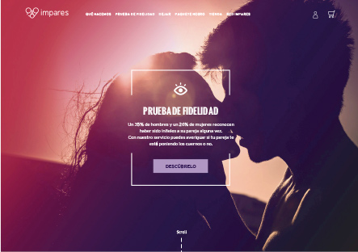
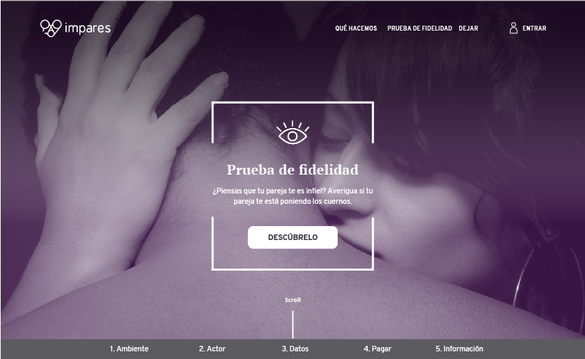
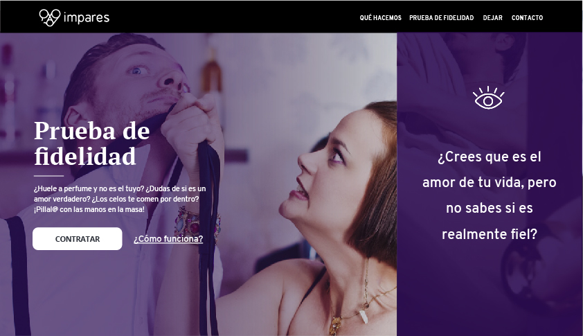
<p class="btn-text">*Para ver la información completa, consultar la memoria.</p>
					</section>

				</div>
			</div><!-- #services -->
			<div class="content-block parallax" id="services_test">
				<div class="container text-center">
					<header class="block-heading cleafix">
						<h1>12. Test de usuarios</h1>
						<div class="colum_up_referencies">[...Cuando empezamos a diseñar la web, pensábamos que el diseño en scroll sería intuitivo y fácil para el usuario, pero tras realizar las primeras pruebas de usuario vimos que había mucha problemática a la hora de pasar a otro paso del proceso de contratación. Tuvimos muchas pruebas con el mismo diseño, cambiando algunos elementos para ver si funcionaba, pero igualmente los usuarios no podían completar el proceso sin preguntar.
Ante esta situación, decidimos darle un giro drástico al diseño y hacerlo mucho más sencillo y directo. Por lo que simplificamos la pantalla de presentación del producto, dividiendo en dos partes el mensaje principal. Uno sería el que llamaría al call to action y la parte de la derecha sería un mensaje de apoyo. ...]

</div>

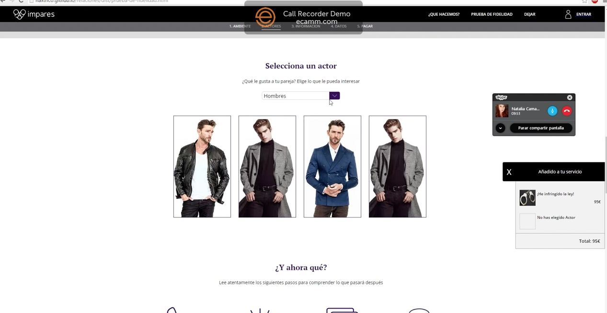
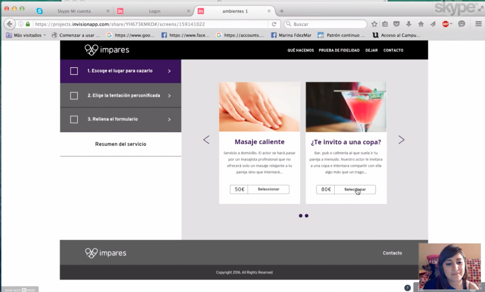
<p class="btn-text">*Para ver la información completa, consultar la memoria.</p>

					
					
					</section>
				</div>
			</div><!-- #services -->
						<div class="content-block parallax" id="impares_des">
				<div class="container text-center">
					<header class="block-heading cleafix">
						<h1>13. Desarrollo y aspectos técnicos</h1>
					</header>
					<section class="block-body">
						<div class="row">
							<div class="col-md-4">
								<div class="service">
									
									<h2>HTML & CSS</h2>
									<p>Utilizamos el HTML para dar estructura a la web y el código CSS para dar estilos. Hemos ido mejorando la forma de escribirlo a medida que aprendíamos más sobre esto. </p>
								</div>
							</div>
							<div class="col-md-4">
								<div class="service">
									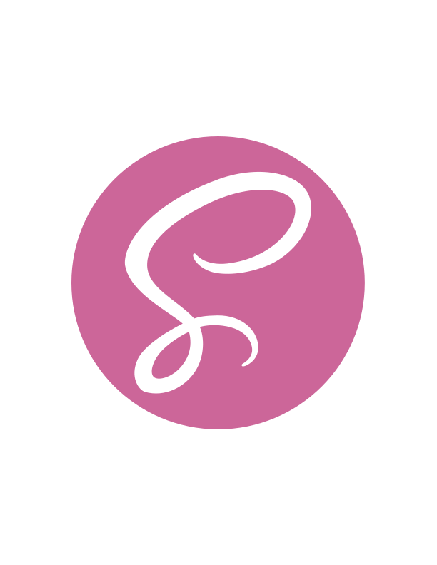
									<h2>SASS</h2>
									<p>Adapatamos el código CSS para compilarlo en SASS. SASS nos ayuda a tener una organización mejor con respecto al código CSS, por lo que cuando se trabaja en grupo es algo que se agradece.
</p>
								</div>
							</div>
							<div class="col-md-4">
								<div class="service">
									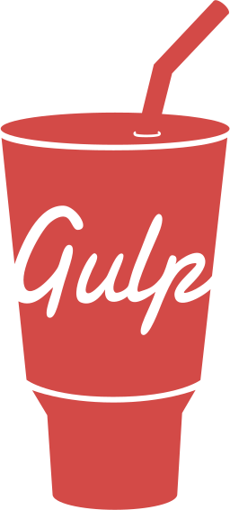
									<h2>GULP</h2>
									<p>Aprendimos a usar el gulp para automatizar tareas. Las tareas que incluimos en nuestro archivo gulpfile fueron: sass, ...</p>
								</div>
							</div>
						</div>
					</section>

				</div>
			</div><!-- #services -->
			<div class="content-block parallax" id="services_web">
				<div class="container text-center">
					<header class="block-heading cleafix">
						<h1>14. Webgrafía y Bibliografía</h1>
					</header>
					<p>Las webs que hemos consultado</p>
				<a class="web_a"href="http://www.awwwards.com/">www.awwwards.com</a>
				<a class="web_a"href="https://www.siteinspire.com/">www.siteinspire.com</a>
				<a class="web_a"href="https://es.pinterest.com/">www.pinterest.es</a>
				<a class="web_a"href="https://dribbble.com/">www.dribble.com</a>
				<a class="web_a"href="http://codepen.io/">www.codepen.io</a>
				<a class="web_a"href="http://stackoverflow.com/">www.stackoverflow.com</a>
				<a class="web_a"href="https://unsplash.com/">www.unsplash.com</a>
				<a class="web_a"href="https://pixabay.com/">www.pixabay.com</a>
				<a class="web_a"href="https://www.smashingmagazine.com/">www.smashingmagazine.com</a>
				<a class="web_a"href="https://blog.crazyegg.com/">www.blog.crazyegg.com</a>
				<a class="web_a"href="https://medium.com/salesforce-ux">www.medium.com/salesforce-ux</a>
				<a class="web_a"href="http://bradfrost.com/blog/">www.bradfrost.com/blog/</a>
				<div class="biblio">
				<p>Libros que hemos leído</p>
				<p class="bi_text"> 1. Don't make me think. Krug Steve</p>
				<p class="bi_text"> 2. Lean UX. Jeff Gothelf</p></div>
				


				
					
					


				</div>
			</div><!-- #services -->
			


			
			<div class="content-block parallax" id="parallax">
				<div class="container text-center">
					<h1>Esto es un extracto de la memoria oficial, para leerlo completo descarga aquí.</h1>
					<a href="assets/images/memoria_impares_baja.pdf" class="btn btn-o-white btn-lg">Descargar</a>
				</div>
			</div><!-- #parallax -->

			<div class="content-block" id="testimonials">
				<div class="container">
					<header class="block-heading cleafix">
						<h1>Nosotros</h1>
						<p>El equipo de Impares.</p>
					</header>
					<section class="block-body">
						<div class="row">
							<div class="col-md-4">
								<div class="testimonial">
									
									<p>Dedicado las 24 horas a picar código en Github. La mayoría de las veces
										debe lidiar con las exigencias de las diseñadoras.</p>
									<strong>Jordi Cutillas</strong><br/>
									<span>Programación</span>
								</div>
							</div>
							<div class="col-md-4">
								<div class="testimonial">
									
									<p>Pendiente del diseño y revisando que todo funcione correctamente para
									la experiencia de usuario. Ya le tiene menos miedo a programar.</p>
									<strong>Mariona Mercadal</strong><br/>
									<span>Diseñadora web/ Programación</span>
								</div>
							</div>
							<div class="col-md-4">
								<div class="testimonial">
									
									<p>Intermediara en el proceso de la 
									programación para controlar que todo
										se hace correctamente y acorde con el diseño.
											</p>
									<strong>Natalia Camacho</strong><br/>
									<span>Diseñadora web / Programación</span>
								</div>
							</div>
						</div>
					</section>
				</div>
			</div><!-- /#testimonials -->


			
		


		</div><!--/#wrapper-->


		<script src="assets/js/jquery-2.1.3.min.js"></script>
		<script src="assets/js/jquery-migrate-1.2.1.min.js"></script>
		<script src="assets/js/bootstrap.min.js"></script>
		<script src="assets/js/jquery.actual.min.js"></script>
		<script src="assets/js/jquery.scrollTo.min.js"></script>
		<script src="assets/js/script.js"></script>

	</body>
</html>
